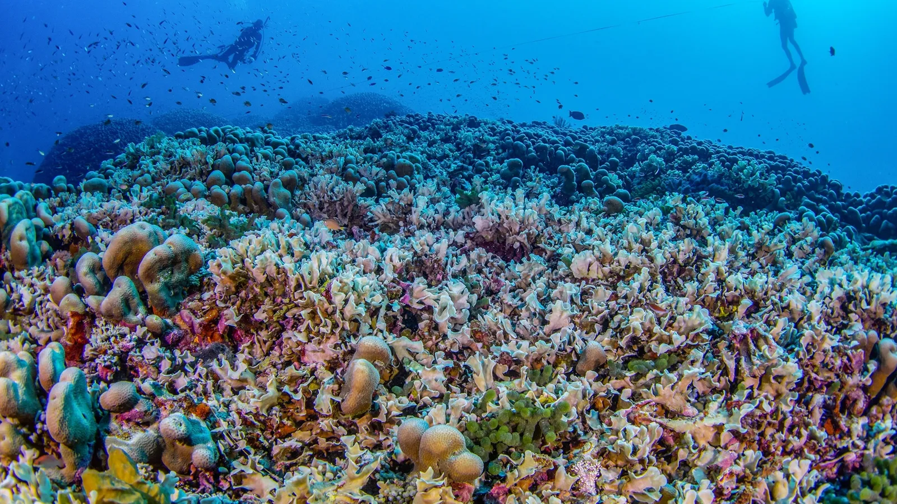

Les poumons : Les récifs corralliens
Les poumons assurent l’oxygénation du sang, tout comme les récifs coralliens jouent un rôle vital dans la production d’oxygène. Les récifs, grâce aux algues symbiotiques qu’ils abritent, contribuent à la photosynthèse et produisent une part significative de l’oxygène mondial. Les deux fonctionnent comme des systèmes de filtration, en purifiant et en redistribuant des éléments essentiels à la vie.
